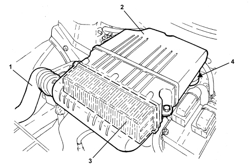

INTRODUCTION - VACUUM AIR CIRCUIT
- Path
- Descriptions > 10 ENGINE > 1048 ENGINE AIR SUPPLY CIRCUIT > 1048A VACUUM AIR CIRCUIT > INTRODUCTION - VACUUM AIR CIRCUIT
- Kind
- system description
- Applies to
- engines: 1.4 8v; all production periods
- Interactive page
- https://sloeber94.github.io/elrnDB-fDbl/en/#/223000212
Applies to: engines: 1.4 8v; all production periods
SPECIFICATIONS
The air intake circuit is made up of various components that ensure the correct amount of air is conveyed to the engine under its various service conditions.

1. Cold air intake
2. Air filter assembly
3. Filter element
4. Intake manifold